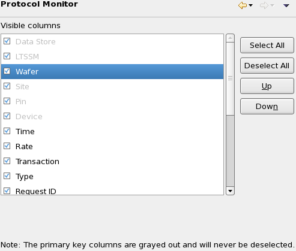

Protocol Monitor preference settings
The Protocol Monitor preference page lets you configure which columns are displayed in which order in Protocol Monitor views.

The order of the columns in the list is also the order in which the columns appear in the view. It can be changed with the Up and Down buttons.
For a description of the available columns, see Test summary tab.
A number of buttons help you in configuring the columns:
- Select All: Check all columns, meaning that all available columns will be displayed in the view.
- Deselect All: Uncheck all columns (except those that cannot be deselected), meaning that none of them will be displayed in the view.
- Up: Moves the selected columns one spot higher in the list. (A column is selected by clicking its name.)
- Down: Moves the selected columns one spot lower in the list.
Functional changes
- Introduced in SmarTest 7.3.2